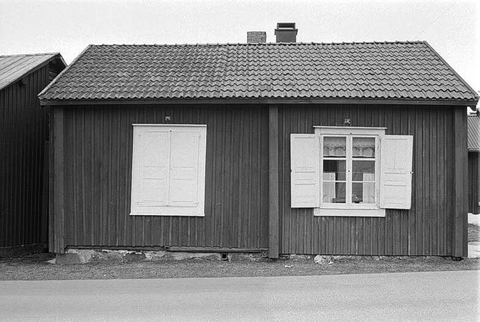
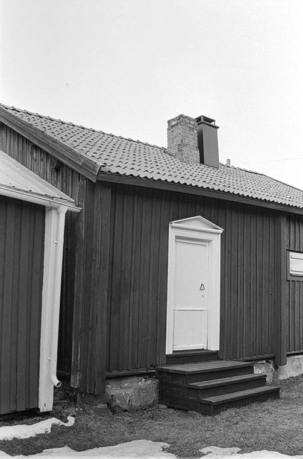

STUGA
302� (del av 302 /303)
Framl�nningsv�gen
������������������������������������������������������������������������������������������������������������������������������������������
 Foto: Nbm 1996: 130: 5 + 9
_________________________________________________________________________
Ena delen av en timrad korsbyggnad.
Stenfot med kalkbruksfogar, ventil av tr�.
Ytterv�ggarna kl�dda med falur�d locklistpanel, snedst�lld fotlist.
Falur�da knutl�dor.
Traditionella mittpostf�nster med sex rutor, bredare �verspr�js. Enkel omfattning. Spegelluckor.
Ing�ng p� V l�ngsidan. Pilasterd�rr med svart smidesbeslag. D�rromfattning med triangul�rt �verstycke.
Svartimpregnerad tr�bro och tr�skel.
Taktegel, r�tt 2-kupigt.
Falur�da vindskivor.
Skorsten av r�dtegel.
I huvudsak �lderdomligt bevarad. Fin traditionell stenfot mot gatan med kalkbruksfogar och tr�ventiler. Gammal v�ggpanel med originalbr�dor och smidda spikar. Gammal, mycket stilfull d�rr med omfattning, smideshandtag. Originalf�nster med g�ngj�rn av 1700-talstyp samt ett bl�st gr�nt glas.
�tg�rdsbehov
Fogar i stenfot l�sa, b�r underh�llas med samma material som befintligt.
Panel ses �ver, vissa l�kt b�r bytas mot bredare f�r att t�cka skarvarna. Fotlisten kompletteras.
Skorstenskr�net trasigt och nedre pl�tbeslag saknas.
S�ttning vid SO knuten unders�kes.
Rostig nummerskylt.